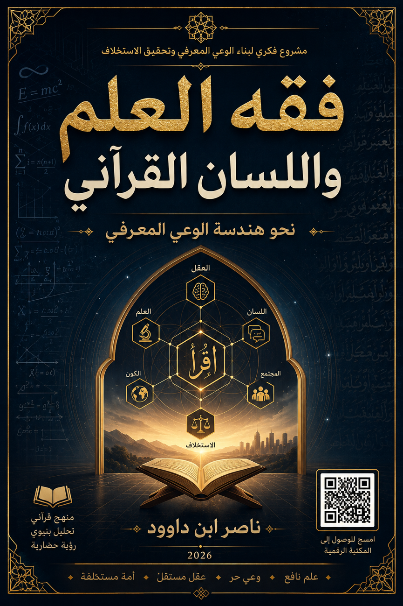

ناصر ابن داوود

نسخة نصية مستخرجة من ملف Word الذي قدمه المؤلف؛ راجع المصدر الأصلي.
جارٍ تجهيز القارئ…
فقه العلم واللسان القرآني
نحو هندسة الوعي المعرفي
تأليف: ناصر ابن داوود | 2026
المقدمة: هندسة الوعي المعرفي وخروج الأمة من نفق التبعية والتفاهة
بسم الله الرحمن الرحيم، والصلاة والسلام على من أُرسل بالهدى ودين الحق، ليخرج الناس من ظلمات الوهم والتخليط إلى نور البصيرة واليقين.
المبحث الأول: في بيان أزمة العقل العربي المعاصر – السياق الوجودي للكتاب
إن الأمة الإسلامية اليوم - بل العقل البشري المعاصر برمته - يقف على مفترق طرق خطير. فهو بين يديه إرث ضخم من التراث، وبين عينيه تحديات عصرية متسارعة، وفوق رأسه منظومات قمع وتجهيل، وتحت قدميه أرض مهتزة من الأزمات. وفي خضم هذا المشهد، يظل السؤال الأكبر معلقاً: لماذا تراجعت الأمة التي كانت رائدة في العلم والحضارة إلى ذيل الركب؟
لقد ساد في القرون المتأخرة من تاريخنا ما يمكن وصفه بـ "نفق التبعية والتفاهة"، وهو نفق مظلم ضيق، تُحجب فيه الرؤية، وتُختزل فيه الآفاق، وتُستنزف فيه الطاقات في صراعات هامشية وجدالات عقيمة، بينما تُسرق الخيارات الكبرى من الأمة، وتُحتكر قرارات المصير من قبل نخب مستترة لا تريد لهذه الأمة أن تستيقظ أبداً.
والإجابة على سؤال التراجع ليست في مؤامرات خارجية فقط، وليست في نقص الموارد فقط، بل هي في هندسة الوعي الجمعي التي خضعت لها العقول عبر قرون. فقد تم:
تسليع المعرفة: تحويل العلم إلى سلعة تقدمها النخب للجماهير وفق مصالحها، لا وفق حاجتها.
تجميد العقل: تقديس التراث البشري وتحويله إلى وصاية لا تُناقش، وكأنه وحي منزل.
تفريغ الدين من محتواه التحرري: تحويله إلى طقوس وخرافات تُلهي عن قضايا الاستخلاف الكبرى، وإلى فتاوى تُكرّس التبعية وتُحرم الإبداع.
توجيه الإعلام: استخدام وسائل التواصل والفضائيات كأدوات لصناعة التفاهة وشل الإرادة الجماعية، وإغراق العقول بالمشتتات.
قمع النخب المبتكرة: تحييد كل صوت يجرؤ على التفكير خارج الصندوق، عبر التكفير والتخوين والاغتيال المعنوي، ليبقى الميدان خالياً للسطحيين والمتملقين.
ومن هنا، يأتي هذا الكتاب كـمحاولة لفك هذه العقد، وكـمشروع لإعادة هندسة الوعي وفق مرجعية القرآن الكريم ومنطق العقل الخالص، ليكون مدخلاً لنهضة حقيقية تخرج الأمة من نفق التبعية والتفاهة إلى فضاءات الحرية والإبداع والاستخلاف العمراني.
المبحث الثاني: لماذا هذا الكتاب؟ وما هي "الهندسة المعرفية" التي يقدمها؟
إن عنوان الكتاب "فقه العلم واللسان القرآني" ليس عنواناً تقليدياً من عناوين الكتب الدينية أو الأكاديمية المألوفة، بل هو برنامج عمل متكامل، ومشروع نهضوي يقوم على ركيزتين أساسيتين:
أولاً: فقه العلم
أي التأصيل لمفهوم المعرفة في التصور الإسلامي، وتفكيك علاقته بالفلسفة والوحي، وتحديد مراتبه وشرفه، وربطه بالاستخلاف والعمران. والعلم في هذا السياق ليس مجرد معلومات تتراكم، بل هو نظام تشغيل للوعي، وأداة تحرر من الجهل والتبعية، ووسيلة عمارة للأرض.
ثانياً: اللسان القرآني
أي العودة إلى اللغة الأم، وتفكيك الجذور اللسانية للمفاهيم القرآنية (كالعلم، والبصيرة، والجن، والإنس، والهداية، والضلال، والذكر، والغفلة) لاستخلاص دلالاتها الوظيفية التشغيلية، وتحريرها من الحمولات التراثية المتراكمة التي شوّهت معانيها الأصلية، وأبعدتها عن مقاصدها التحررية.
أما "الهندسة المعرفية"، فهي المنهج الذي يربط بين هذه المفاهيم، ويُنتج منها:
نظاماً تشغيلياً للوعي، يمكن تطبيقه في الواقع.
بروتوكولات لمواجهة التحديات الفكرية والاجتماعية.
نماذج تحليلية لفهم الواقع وتغييره.
وهو منهج يقوم على أربع ركائز منهجية:
الركيزة
الوصف
التطبيق
التأصيل اللساني
تفكيك الكلمات إلى جذورها الأصلية، واستخلاص دلالاتها الوظيفية.
تحليل مفاهيم "الجن"، "الإنس"، "العلم"، "البصيرة".
التحليل البنيوي
دراسة العلاقات بين المفاهيم، وكيف تُشكّل أنظمة متكاملة.
ربط "العلم" بـ "الاستخلاف"، و"الجن" بـ "النخب المستترة".
الإسقاط التشغيلي
تحويل المعرفة النظرية إلى أدوات عملية قابلة للتطبيق.
تفعيل أسماء الله الحسنى في الدعاء والذكر والتخلق.
النقد التحرري
كشف آليات القمع والسيطرة، وتفكيكها.